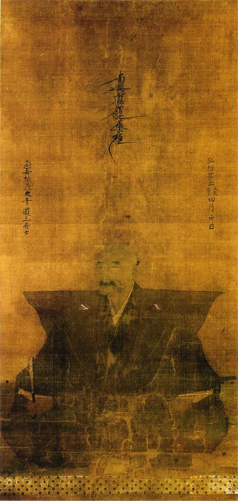

斎藤道三戦国編 其の二
「美濃のマムシ」と呼ばれた戦国武将・斎藤道三（さいとうどうさん）です。
この人の一番の謎：油売りから一代で国を盗ったの？
生涯の要点
- 油売りから一代で美濃（今の岐阜県南部）を盗った、と長く言われてきました
- 近年は、父の長井新左衛門尉（ながいしんざえもんのじょう）と道三の親子二代で成り上がった、という見方が有力です
- 父は京都の寺の僧から油商人になり、美濃の長井氏に仕えて武士になったとされます
- 道三は父の跡を継ぎ、主君である守護の土岐頼芸（ときよりのり）を追い出しました（時期には諸説あります）
- 拠点の稲葉山城は、のちに織田信長が入って岐阜城となります
- 娘の帰蝶（きちょう／濃姫）は織田信長の妻になりました
- 1556年、息子の義龍（よしたつ）と対立して戦い、長良川で敗れて亡くなりました
よくある疑問
油売りから一代で国を盗ったの？
長くそう言われてきましたが、近年は父の長井新左衛門尉と道三の親子二代で成り上がった、という見方が有力です。
織田信長とはどんな関係？
道三の娘・帰蝶（濃姫）が信長の妻になりました。拠点の稲葉山城は、のちに信長が入って岐阜城となります。
長編で、この場面から見る
- ▶ 0:39 1 わが子に討たれた父（斎藤道三）
非業の最期をとげた戦国の人10人｜わが子に討たれた父、腹を切らされた茶人
長編を読む
非業の最期をとげた戦国の人10人｜わが子に討たれた父、腹を切らされた茶人
斎藤道三は、本当に「油売り」から国を盗ったのか｜マムシの国盗りは二代がかりだった
同じころに亡くなった人

斎藤道三像
60秒で見る
出典と画像
肖像：斎藤道三像／Wikimedia Commons／パブリックドメイン
写真：岐阜城（金華山・昭和の再建天守） 撮影 Alpsdake／Wikimedia Commons／CC BY-SA 3.0（https://creativecommons.org/licenses/by-sa/3.0/）を縦長に配置して使用
写真：長良川と金華山 撮影 Alpsdake／Wikimedia Commons／CC BY-SA 4.0（https://creativecommons.org/licenses/by-sa/4.0/）を縦長に配置して使用
動画のナレーション：VOICEVOX:青山龍星